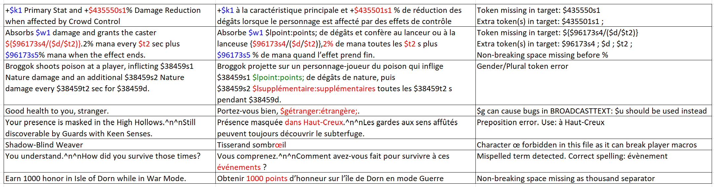
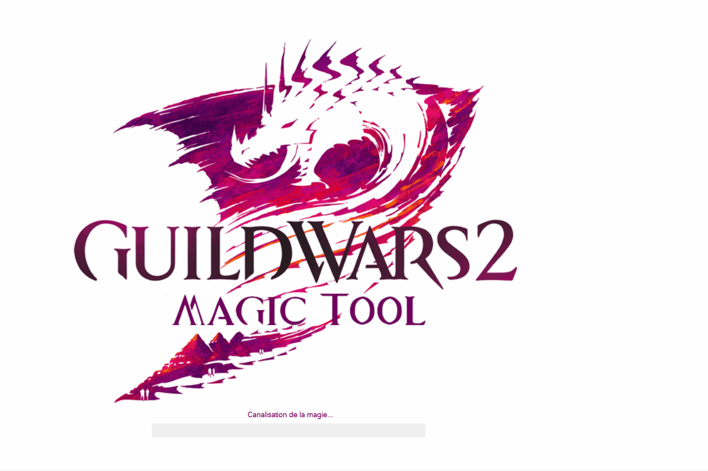

World of Warcraft Toolbox
Series of Excel add-in tools developped in C# during the translation of World of Warcraft.
As World of Warcraft localization files can contain thousands of strings and complex runtime variables, manually reviewing translations was both time-consuming and prone to human error. The style guide provided rules and guidelines to follow, but ensuring compliance was challenging. To streamline the QA process and reduce the risk of inconsistencies and player-facing issues, I developed a set of specialized tools focused on text rendering, automation, and validation.
Text Rendering Tool
Reviewing localization files directly in spreadsheets often makes it difficult to visualize how text will actually appear in-game, especially when dealing with complex markup and dynamic content.
This tool converts World of Warcraft's custom markup into formatted HTML, allowing reviewers to inspect translations in a much more realistic environment before delivery.

Features:
- Converts game-specific markup into HTML formatting for easier review
- Inserts game icons and visual elements to reproduce the final in-game presentation
- Generates gender and plural variants automatically, allowing both versions to be spellchecked and reviewed
- Produces a browser-ready preview, making UI and formatting issues easier to spot
Error Report Tool

Features:
- Automatically detects the target language in multilingual exports
- Validates all localization tokens against the source text
- Detects missing, malformed, or unauthorized variables
- Enforces style guide and typography rules
- Validates gender and plural token syntax
- Detects issues that may affect in-game text rendering or gameplay
- Highlights problematic text whenever possible
- Provides detailed error reports with actionable feedback
Guild Wars 2 Automation Tool

Features:
- Interface to customize the hotkeys for automation
- Automates repetitive localization tasks